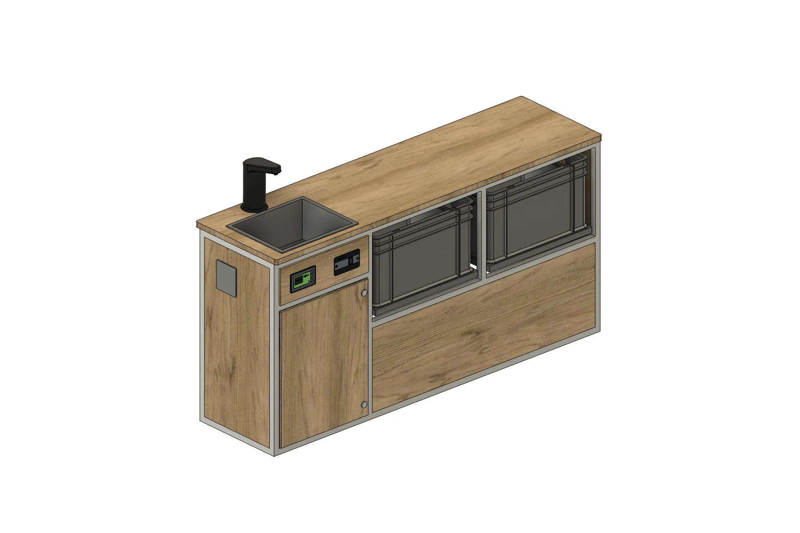
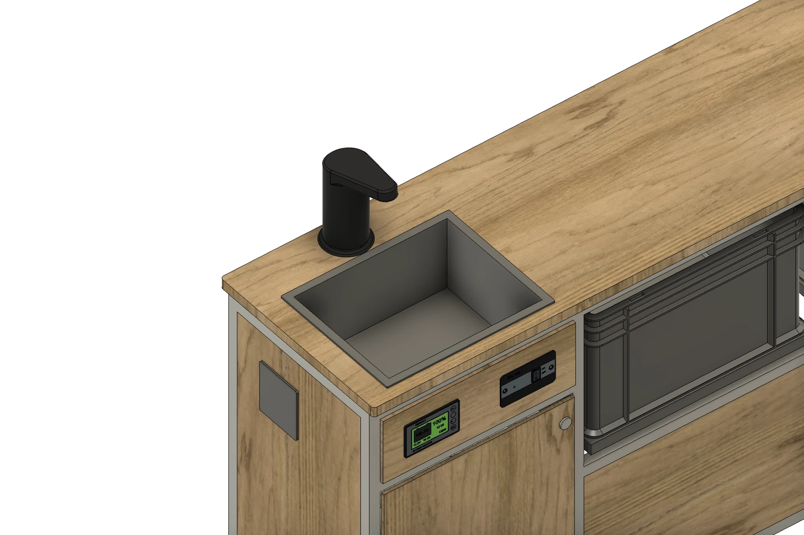
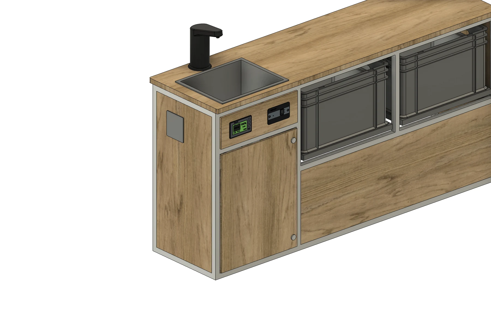
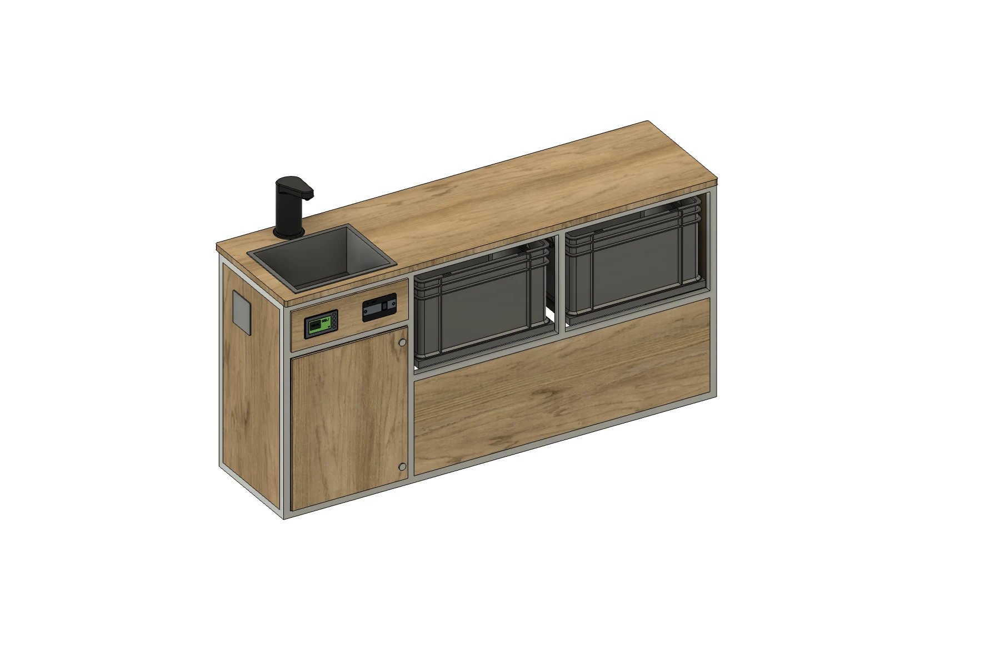
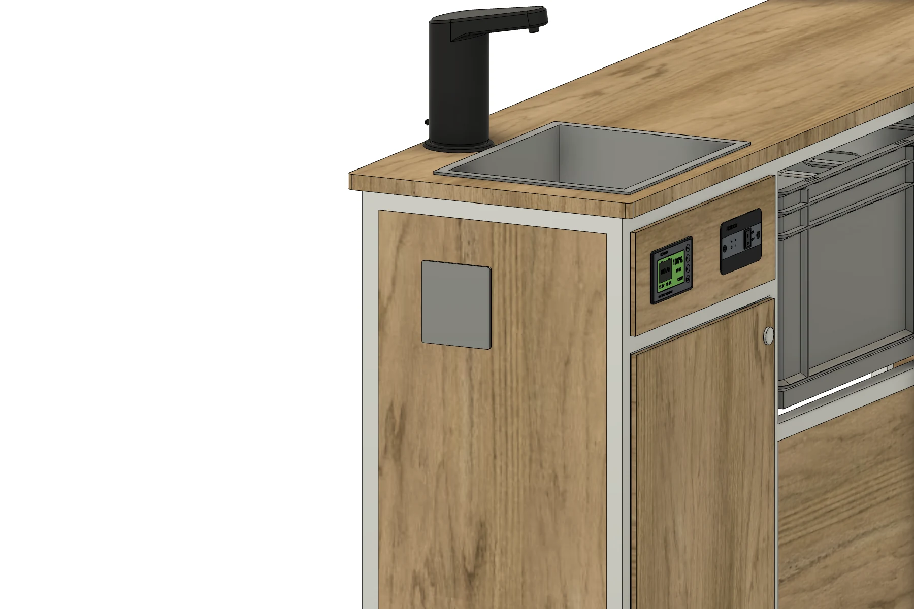

モジュール一覧 / シンク付きサイドキャビネットMODULE 04 / 11
Side cabinet with sink
ALUMINUMシンク付きサイドキャビネット
フロントを空けて、水まわりをサイドへ。
ヘキサモジュールの中で唯一、フロントモジュールを設置せずに8ナンバー対応のレイアウトを組めるサイドキャビネット。シンク・蛇口、給水と排水各12L、シャワーをサイドにまとめ、プッシュオープン式のユーロコンテナを2列設置できます。
8ナンバーへの適合は、就寝・炊事設備などを含めた車両全体の構成で確認します。
Side cabinet with sink

バーチ合板01
フロントなしで8ナンバー対応ヘキサモジュールで唯一のサイドキャビネット構成
02
給排水 各12L＋シャワーシンク・蛇口・タンクをサイドに集約
03
押して開く、2列の収納プッシュオープン式ユーロコンテナ
SIDE KITCHEN / NO FRONT MODULE
フロントを空ける、という選択。
水まわりをサイドキャビネットにまとめることで、フロントモジュールを使わない8ナンバー対応のレイアウトへ。シンクと蛇口、タンク収納をひとつに備えています。

FRESH WATER 12L / WASTE WATER 12L
給水も排水も、シンクの下へ。
給水用12Lと排水用12Lのタンクを、シンク下の扉の中へ。閉じた状態と開いた状態を、同じ角度から比較できます。


PUSH OPEN / TWO EUROCONTAINERS
軽く押して、手前へ引き出す。
ユーロコンテナはプッシュオープン式。前面を押すと手前に出てきて、トレーごと引き出して使えます。2列の収納を同じ角度で見比べてください。


SHOWER / EUROBOX STORAGE
シャワーも、2列のボックス収納も。
側面のシャワーと、天板下のユーロボックス。水まわりに加えて、道具を分けて収められる収納も備えています。

DETAILS
モジュールの内容
- 合板の仕上げ
- ヘキサ合板（ブラック）／バーチ合板
- 合板の小口
- どちらの仕様も木の色・木目
- レイアウト
- フロントモジュールを設置しない8ナンバー対応構成
- 給水・排水
- 給水12L／排水12L
- 水まわり
- シンク・蛇口・側面シャワー
- タンク収納
- シンク下・扉付き
- コンテナ収納
- ユーロコンテナ2列・プッシュオープン式
- フレーム
- アルミフレーム
- 天板
- ALBERO（アルベロ）合板・厚さ18mm
- 操作・確認
- インバータースイッチ・バッテリーモニター